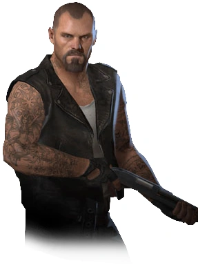

Supervivientes
En Left 4 Dead, los jugadores asumen el papel de uno de los cuatro supervivientes, cada uno con su propia personalidad y estilo.
Regresar a la página principal
- Bill
- William "Bill" Overbeck, él era un veterano de la Guerra de Vietnam que sirvió en el Primer Grupo de Operaciones Especiales del Ejército de los Estados Unidos.

- Zoey
- En general, Zoey es quizás la más amable de los Supervivientes, y la que es tratada de la manera más amable siendo la menor del grupo en Left 4 Dead.

- Francis
- Él es un rudo motociclista cubierto de tatuajes en su cuello y sus brazos. Sus tatuajes lo identifican como miembro de la "Legión del infierno".

- Louis
- Louis solía ser un analista de sistemas en "Franklin Brothers" en el departamento de Informática con sede en Filadelfia, hasta el segundo día después de la primera infección.